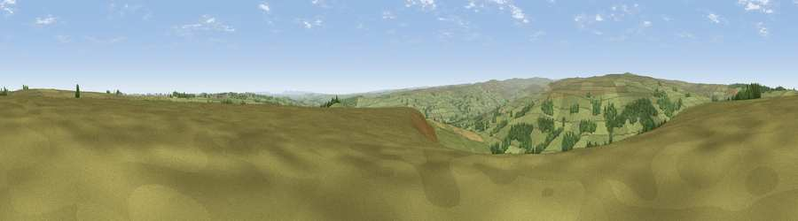

Viewpoint near Wolsingham
#9840 in England · top 17% of its area beats it · near Wolsingham · open accessWhere it is
The exact computed spot (NZ 07725 40412). Click the marker for map links.
Public access: this spot lies on mapped open-access land (CRoW Act 2000) — you may roam here on foot. Computed from Natural England's CRoW access layer and OpenStreetMap rights of way — not the legal definitive map. Always verify locally.
The view, rendered

A 360° render of this exact spot computed from the terrain model, tree cover and land cover — summer colours, afternoon light, calibrated against photographs of famous viewpoints. Real trees, hedges and buildings will differ in detail.
The panorama
Grey silhouette: terrain skyline in each direction (720 bearings, Earth curvature and refraction included). Dashed green: skyline with trees (+15 m) and buildings (+8 m) as obstacles. Blue strip: how far the ground is visible on each bearing.
Where the view opens
Wedge length = distance to the farthest visible ground on that bearing (vegetation-aware). Rings at 10, 25 and 50 km.
What fills the view
85% grassland · 12% woodland · 2% cropland
Angular shares of the visible panorama (visual magnitude), not map area. Landscape diversity 0.22 (0–1 Shannon).
Key numbers
More beautiful places nearby
The staircase of upgrades: each row has a higher view potential than everything closer. Driving times are estimates from straight-line distance, calibrated against real road routing — check an actual route before setting out.
| Place | Direction | Drive | Score |
|---|---|---|---|
| Fatherley Hill | W · 5 km | ~12 min | 66.7 |
| Viewpoint near Frosterley | WSW · 6 km | ~12 min | 68.3 |
| Collier Law | WNW · 6 km | ~13 min | 71.7 |
| Pontop Pike | NNE · 14 km | ~26 min | 77.8 |
| Little Dun Fell | WSW · 38 km | ~57 min | 78.4 |
| Cross Fell | W · 40 km | ~59 min | 78.7 |
| Viewpoint near Cumrew | WNW · 53 km | ~74 min | 78.8 |
| Viewpoint near Lazenby | ESE · 54 km | ~75 min | 82.1 |
54.75860, -1.88148 · source: screening · position refined by local search. Computed location — check access rights before visiting.